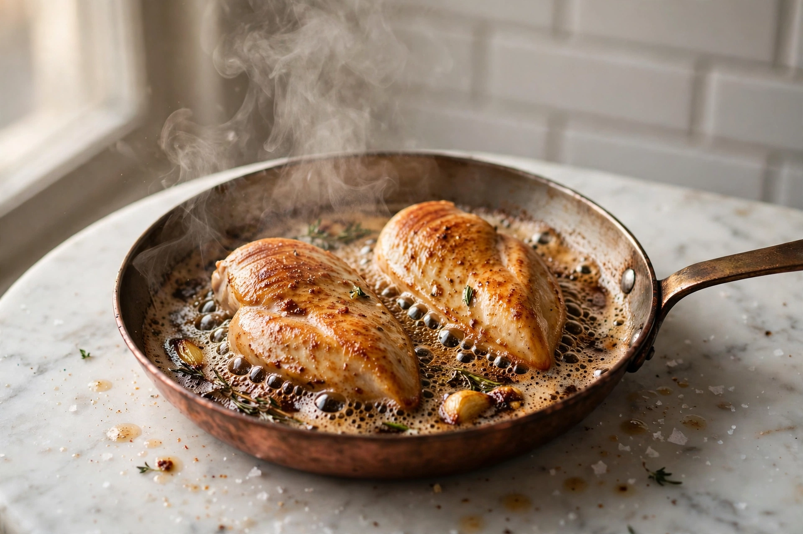
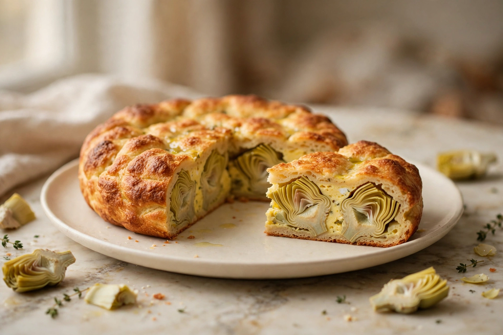
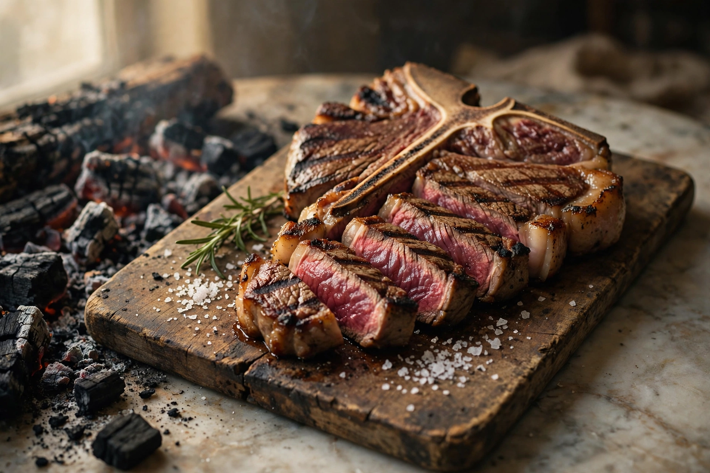
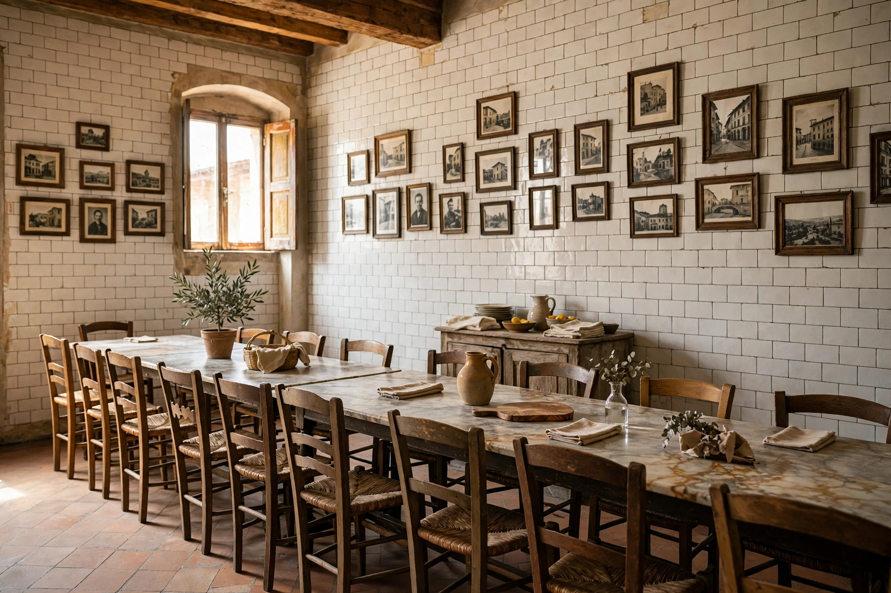
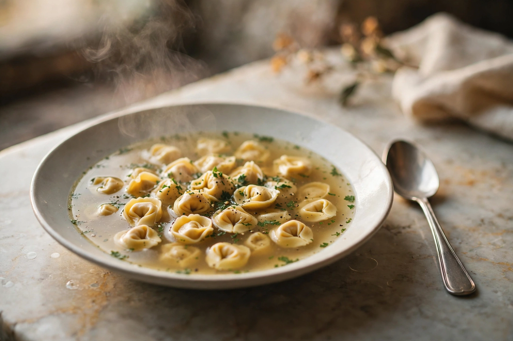
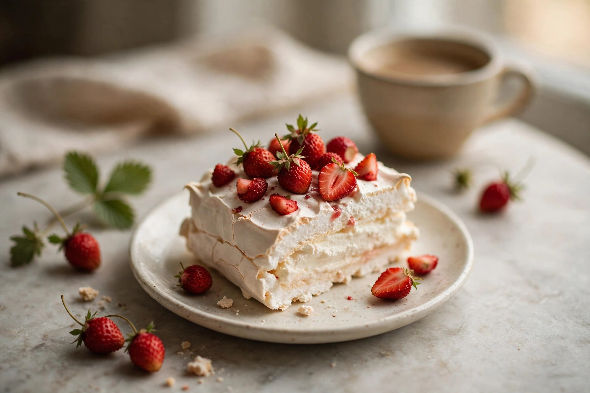

il leggendario
Petto di pollo al burro
Prima sulla brace, poi infarinato, passato nell'uovo e finito in una padella di rame colma di burro fuso. In tavola arriva ancora sfrigolante, nel suo burro brunito.
la carta di oggi, scritta a mano
A due passi da Santa Maria Novella, una trattoria che non è mai cambiata: tavoli di marmo da condividere, il menu scritto a mano ogni giorno e il petto di pollo al burro che ha fatto la sua leggenda.

Il menu cambia ogni giorno, scritto a mano. Ma la casa è famosa soprattutto per tre piatti: quelli che i fiorentini ordinano da generazioni.
il leggendario
Prima sulla brace, poi infarinato, passato nell'uovo e finito in una padella di rame colma di burro fuso. In tavola arriva ancora sfrigolante, nel suo burro brunito.

di stagione
Carciofi e uova in un tortino dorato, quasi una frittata: il secondo piatto simbolo della casa. C'è solo quando i carciofi sono di stagione.

alla brace
Grande e al sangue, come vuole la tradizione fiorentina, cotta sulla brace e salata al momento. Da condividere, come i tavoli.
La carta cambia con il mercato e con la stagione: questa è la spina dorsale, i piatti che tornano da sempre. I prezzi sono sulla carta del giorno, in sala.
Il salame al finocchietto e i salumi, per aprire come si deve.
Fagioli cotti piano, con olio buono: la Toscana più semplice.
Carciofi e uova, dorato in forno. Solo di stagione.
Nel brodo ricco della gallina bollita: una delle ultime cucine a farlo ancora così.
Al sugo di carne, intenso e casalingo.
Il piatto simbolo: brace, poi burro fuso nel rame. Sfrigolante.
Grande, alla brace, al sangue.
La gallina del brodo, bollita come una volta.
Per chi cerca la Firenze più vera.
Meringa leggera e fragole: il finale che tutti ricordano.
il menu del giorno è scritto a mano, in sala
Il petto di pollo passa prima sulla brace. Poi viene infarinato, passato nell'uovo e finito in una piccola padella di rame colma di burro fuso, ancora sulla brace. In tavola arriva così: sfrigolante, nel suo burro brunito, da raccogliere con il pane.
Pareti di piastrelle bianche coperte di vecchie fotografie, tavoli di marmo da condividere con chi capita accanto, sedie di legno tutte diverse.
La sala è piccola e quasi nulla è cambiato dal 1869. È questo, da sempre, il lusso di Sostanza: non dover cambiare.

scorri le stampe


Come nel 1869: niente app, niente moduli. Una telefonata, e il tavolo è vostro.
Le prenotazioni si prendono solo al telefono. La trattoria non ha un indirizzo email: se ne trovate uno a suo nome, non è della casa.
La sala è piccola e si riempie in fretta: meglio chiamare con qualche giorno di anticipo, specie in alta stagione.
Il servizio serale si svolge in due turni, come da tradizione: l'orario esatto si concorda al telefono.
risponde la casa, non un centralino
Trattoria Sostanza
Via del Porcellana 25/R
50123 Firenze
| Lunedì-Venerdì | 12:30-14:00 · 19:30-21:45 |
|---|---|
| Sabato | Chiuso |
| Domenica | Chiuso |
Orari secondo il profilo Google della trattoria: per sicurezza, confermate al telefono.